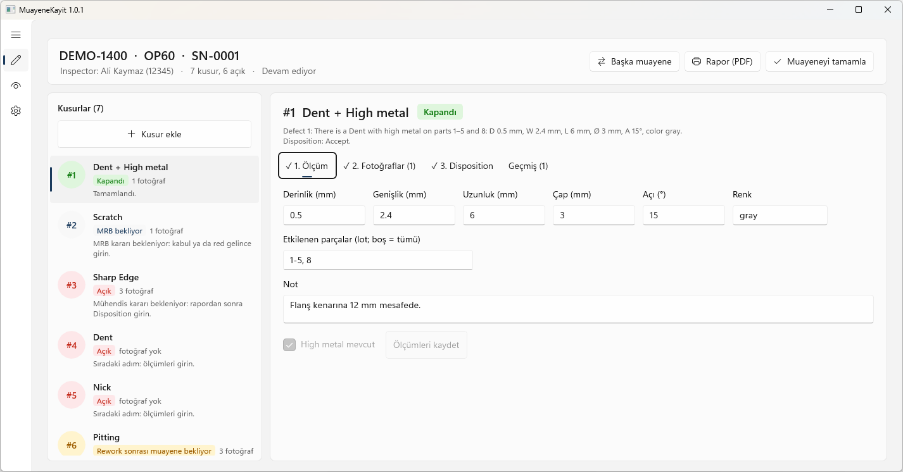
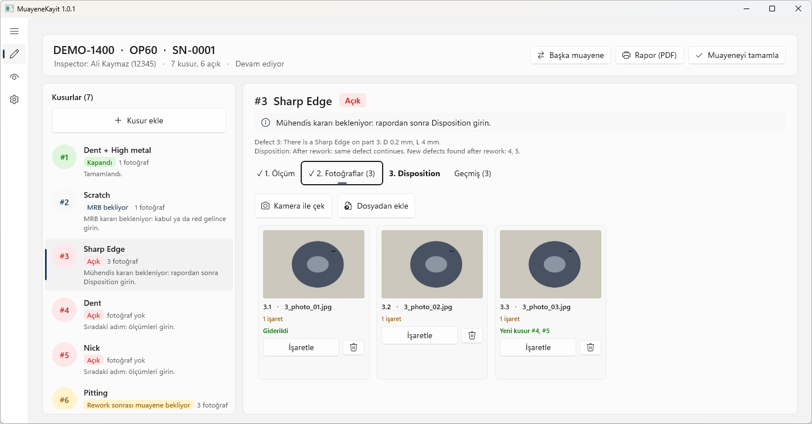
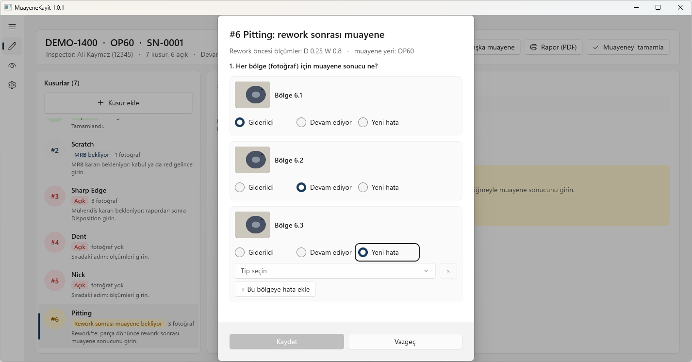
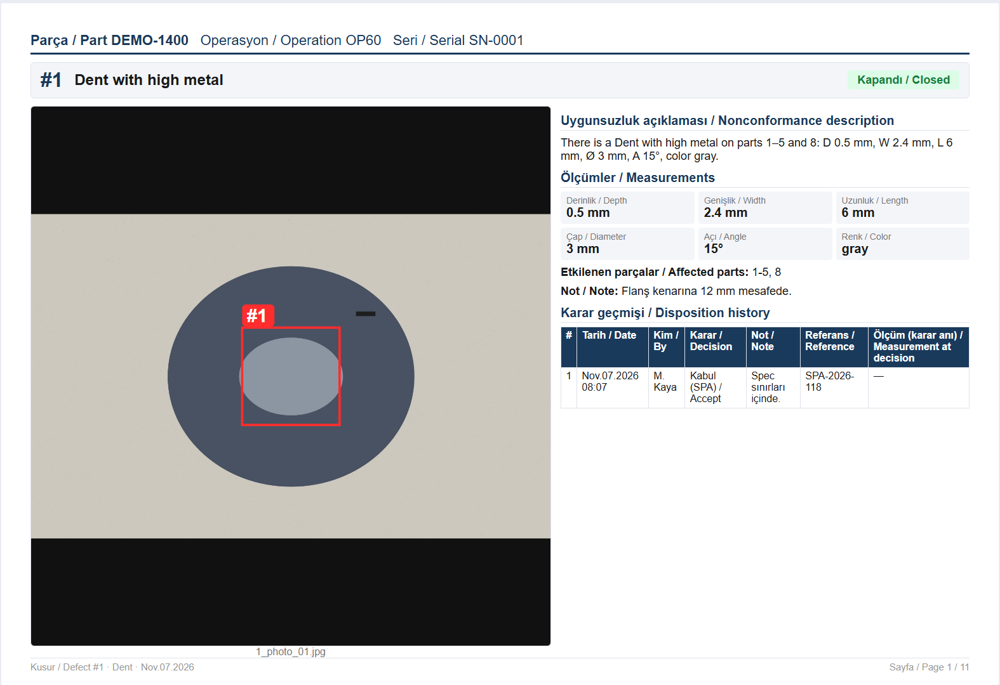
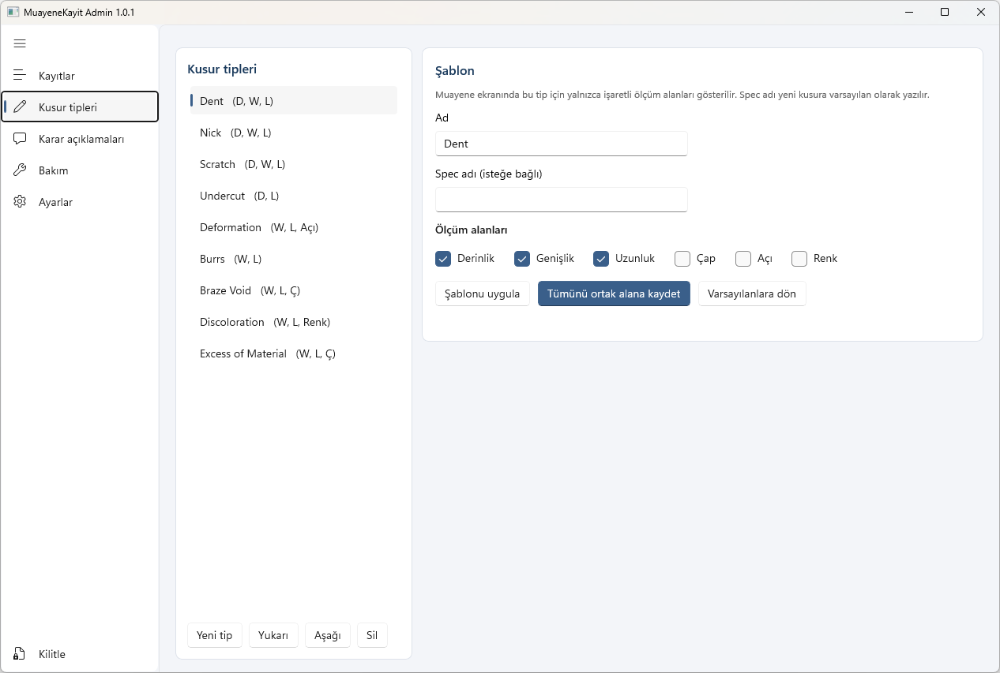

Motor parçası görsel muayene kayıt sistemi: kusur, ölçüm, fotoğraf, disposition ve iki dilli PDF rapor, tek programda.
Hedef: muayeneci veriyi bir kez girsin; ölçüm, fotoğraf, karar ve rapor aynı kayıttan çıksın, geçmiş hiç silinmesin.
AçıkRework bekliyorKapandı
Renk yalnızca dikkat gereken yerde (ISA-101).

.125 in biçiminde.There is a Dent with high metal on parts 1–5 and 8: D 0.5 mm, W 2.4 mm, H 0.2 mm.




MuayeneKayit.exe; sürümü ve mimariyi seçer.Veri\
_config\ defect_types.json, measure_fields.json …
_audit.log
PD170\OP40\SN001\
session.json
defects\1.json, 1_photo_01.jpg
reports\Rapor_v1.pdf
MuayeneKayit.settings.json içinde veri klasörünü yaz.Güncelleme: yeni sürüm klasörünü kopyala, surum.txt'yi değiştir. Açık programlar etkilenmez.
dotnet run --project tests\MuayeneKayit.TestsRaporlar: docs/test/
Fonksiyonel ve güvenlik planları, sonuç raporları ve yapılan düzeltmeler.